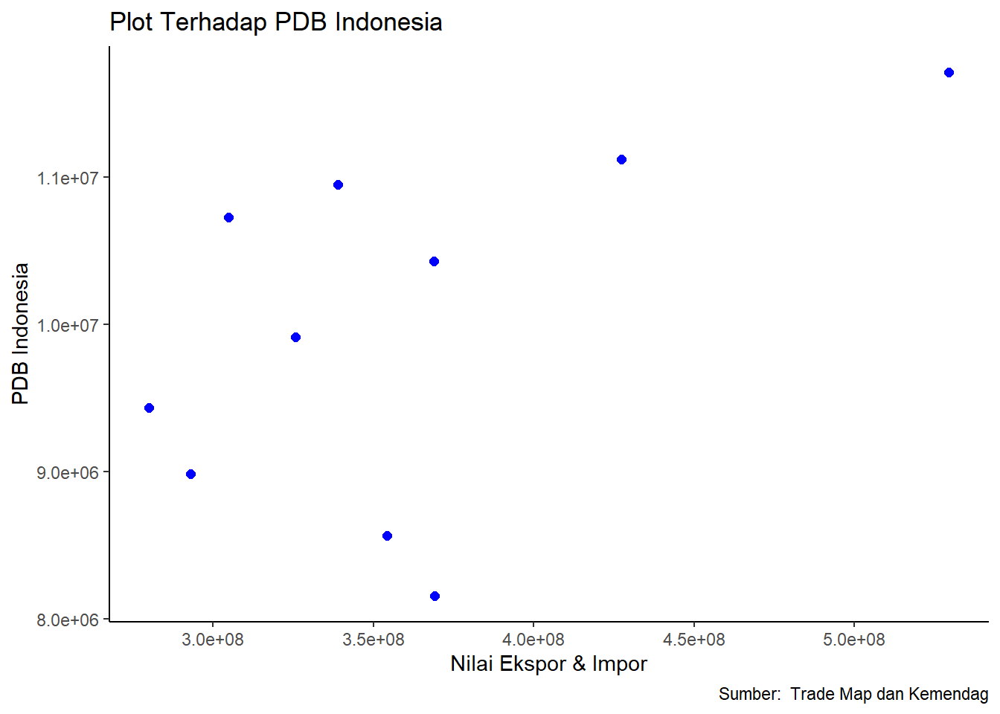

Analisis Pengaruh Perdagangan Internasional Terhadap Pertumbuhan Ekonomi Indonesia Periode 2013-2022
Metode Penelitian Politeknik APP Jakarta
Author
Maharani Agustin (220204145)
Published
January 17, 2024
Logo Politeknik APP Jakarta
1 PENDAHULUAN
1.1 Latar Belakang
Pertumbuhan ekonomi menjadi sebuah tolok ukur yang signifikan untuk mengevaluasi kemajuan pembangunan ekonomi di suatu negara. Proses pertumbuhan ekonomi dapat diartikan sebagai perubahan yang berkelanjutan dalam kondisi perekonomian suatu negara menuju kondisi yang lebih baik selama periode tertentu. Salah satu aspek penting dari pertumbuhan ekonomi adalah peningkatan kapasitas produksi dalam perekonomian, yang tercermin dalam peningkatan pendapatan nasional (Rinaldi, 2017:51). Pertumbuhan ekonomi yang positif memiliki potensi untuk meningkatkan kesejahteraan masyarakat.
Beberapa faktor memengaruhi pertumbuhan ekonomi suatu negara, di antaranya adalah kegiatan perdagangan internasional, yang melibatkan ekspor neto dan investasi. Perdagangan internasional merupakan kegiatan pertukaran barang dan jasa antara penduduk suatu negara dengan penduduk negara lain (Doni dkk, 2012:199). Perdagangan ini tidak hanya mencakup ekspor dan impor barang, tetapi juga mencakup ekspor dan impor jasa serta perdagangan modal. Praktik perdagangan internasional, seperti ekspor dan impor minyak bumi, dapat memudahkan negara dalam memenuhi kebutuhannya.
Manfaat dari perdagangan internasional tidak hanya terbatas pada pemenuhan kebutuhan, tetapi juga mencakup kenaikan pendapatan negara, peningkatan investasi, dan lapangan kerja yang lebih luas. Melalui perdagangan internasional, produk-produk domestik dapat dijual tidak hanya di pasar lokal tetapi juga di pasar internasional, yang berpotensi meningkatkan pendapatan nasional suatu negara. Oleh karena itu, perdagangan internasional memiliki dampak yang signifikan terhadap pertumbuhan ekonomi suatu negara. Perdagangan internasional memiliki dampak yang signifikan terhadap pertumbuhan ekonomi suatu negara. Apabila suatu negara lebih aktif dalam kegiatan ekspor dibandingkan impor, maka pendapatan nasional negara tersebut cenderung meningkat, yang pada akhirnya akan berkontribusi positif terhadap pertumbuhan ekonomi. Keuntungan dari perdagangan internasional terletak pada kemampuan suatu negara untuk fokus pada produksi barang dan jasa yang lebih efisien, sehingga dapat diekspor ke pasar internasional. Manfaat dari perdagangan internasional mencakup peningkatan pendapatan negara, cadangan devisa yang bertambah, transaksi modal, dan peluang kerja yang semakin meningkat.
1.2 Ruang Lingkup
Dalam penelitian ini akan diberikan batasan yang akan mencakup tentang perdagangan internasional dan pertumbuhan ekonomi selama 10 tahun terakhir dan ruang lingkup penelitian ini yang hanya menggunakan data dalam kurun waktu 10 tahun (dari tahun 2013 sampai dengan tahun 2022). Kegiatan pengambilan data diperoleh melalui web Kementerian Perdagangan (Kemendag) dan web ITC Trademap.
1.3 Rumusan Masalah
Berdasarkan uraian latar belakang masalah diatas, maka terdapat beberapa indikator yang menjadi rumusan masalah dalam penelitian ini. Adapun rumusan masalah tersebut adalah
Apakah perdagangan internasional memiliki pengaruh yang signifikan terhadap pertumbuhan ekonomi di Indonesia selama 10 tahun terakhir (2013-2022)?
1.4 Tujuan Penelitian
Berdasarkan latar belakang dan permasalahan yang ada maka tujuan dari penelitian ini adalah sebagai berikut :
Mengetahui besarnya pengaruh ekspor dan impor terhadap pertumbuhan ekonomi Indonesia
1.5 Manfaat Penelitian
Penelitian ini dapat menyebarkan pengetahuan dan informasi terkini mengenai pengaruh perdagangan internasional terhadap pertumbuhan ekonomi Indonesia. Ini membantu para pembaca untuk memahami dinamika dan faktor-faktor yang terlibat dalam hubungan antara perdagangan internasional dan perkembangan ekonomi suatu negara dan Artikel ini dapat menjadi sumber referensi yang berharga bagi peneliti, akademisi, dan praktisi ekonomi yang tertarik pada topik tersebut.
1.6 Package
Packages yang digunakan sebagai berikut:
library(tidyverse)
── Attaching core tidyverse packages ──────────────────────── tidyverse 2.0.0 ──
✔ dplyr 1.1.4 ✔ readr 2.1.4
✔ forcats 1.0.0 ✔ stringr 1.5.1
✔ ggplot2 3.4.4 ✔ tibble 3.2.1
✔ lubridate 1.9.3 ✔ tidyr 1.3.0
✔ purrr 1.0.2
── Conflicts ────────────────────────────────────────── tidyverse_conflicts() ──
✖ dplyr::filter() masks stats::filter()
✖ dplyr::lag() masks stats::lag()
ℹ Use the conflicted package (<http://conflicted.r-lib.org/>) to force all conflicts to become errors
library(readxl)library(WDI)
2 Studi Pustaka
2.1 Perdagangan Internasional
Perdagangan internasional berkembang dari pertukaran sederhana dalam bentuk perdagangan tenaga kerja dengan barang dan jasa lainnya. Proses ini kemudian berkembang menjadi perdagangan barang dan jasa pada saat transaksi terjadi, diikuti dengan kompensasi barang dan jasa di masa mendatang (Halwani, 2002:17). Perdagangan internasional semakin meluas hingga mencakup pertukaran antarnegara yang melibatkan aset-aset berisiko seperti saham, valuta asing, dan obligasi, memberikan keuntungan bagi kedua belah pihak, serta semua negara yang terlibat di dalamnya. Hal ini memungkinkan setiap negara untuk melakukan diversifikasi atau penganekaragaman kegiatan perdagangan guna meningkatkan pendapatan mereka.
Perdagangan internasional dianggap sebagai cara untuk meningkatkan kemakmuran suatu bangsa dengan beberapa alasan (Sobri, 2011:2):
Tidak semua negara memiliki peralatan produksi atau kondisi ekonomi yang sama, baik dari segi kualitas maupun kuantitas.
Adanya perbedaan biaya produksi suatu barang antar negara karena ketidaksetaraan kondisi-kondisi tersebut. Suatu negara mungkin lebih menguntungkan untuk mengimpor suatu barang daripada memproduksinya sendiri. Dengan adanya perdagangan, negara dapat memperoleh sejumlah barang dengan harga yang lebih murah dibandingkan dengan memproduksi sendiri di dalam negeri.
Perdagangan memungkinkan negara untuk menghindari jenis produksi suatu barang yang memiliki biaya produksi tinggi karena keterbatasan faktor produksi yang diperlukan, dan kemudian melakukan pertukaran. Dengan adanya perdagangan, negara-negara yang terlibat dapat saling memperoleh sejumlah barang dengan total biaya lebih rendah.
Dengan demikian, perdagangan internasional dianggap sebagai mekanisme yang dapat memberikan manfaat ekonomi melalui pemanfaatan kelebihan komparatif antar negara, memungkinkan penghematan biaya produksi, dan meningkatkan kesejahteraan suatu bangsa.Boediono (2001:161) mendefinisikan inflasi sebagai suatu kecenderungan kenaikan harga secara umum dan terus-menerus. Untuk dianggap sebagai inflasi, kenaikan harga tidak hanya terjadi pada satu atau dua barang, melainkan meluas dan berdampak pada sebagian besar barang lainnya. Fluktuasi inflasi dapat mempengaruhi kegiatan perekonomian, dengan dampak utama berupa penurunan daya beli masyarakat karena nilai riil mata uang mengalami penurunan.
2.2 Pertumbuhan Ekonomi
Pertumbuhan ekonomi adalah suatu proses perubahan yang berkelanjutan dalam kondisi perekonomian suatu negara, menuju keadaan yang lebih baik selama periode tertentu. Dalam konteks ini, pertumbuhan ekonomi dapat diartikan sebagai peningkatan kapasitas produksi dalam perekonomian, yang tercermin dalam bentuk peningkatan pendapatan nasional (Rinaldi, 2017:51). Definisi pertumbuhan ekonomi menurut Munandar (2016:23) mencerminkan sejauh mana aktivitas perekonomian akan menghasilkan penambahan pendapatan masyarakat dalam suatu periode tertentu. Nasrullah (2014) menekankan bahwa suatu negara dapat dianggap memiliki kondisi perekonomian yang baik dengan menghitung tingkat pertumbuhan ekonomi yang tinggi atau, secara sederhana, dengan mengukur peningkatan jumlah produksi barang dan jasa dalam perekonomian, yang dikenal dengan istilah Produk Domestik Bruto (PDB).
3 Metode Penelitian
3.1 Data
Tahun
Nilai Ekspor (ribu USD)
Nilai Impor (ribu USD)
PDB (Juta Rupiah)
2013
182.551.754
186.628.631
8.156.497.800
2014
176.036.194
178.179.340
8.564.866.600
2015
150.282.258
142.694.804
8.982.517.100
2016
144.494.206
135.652.914
9.434.613.400
2017
168.810.637
156.925.150
9.912.928.100
2018
180.215.036
188.711.246
10.425.851.900
2019
167.682.996
171.275.737
10.425.851.900
2020
163.306.490
141.622.127
10.949.155.400
2021
231.587.887
195.694.490
10.722.999.300
2022
291.979.103
237.447.057
11.120.077.900
3.2 Metode analisis
Metode yang digunakan dalam penelitian ini adalah metode regresi linier berganda. Metode regresi linier berganda untuk menghitung besarnya pengaruh ekspor dan impor terhadap pertumbuhan ekonomi Indonesia. Metode analisis yang digunakan dalam penelitian ini adalah metode kuantitatif dan penjabaran deskriptif. Teknik analisis kuantitatif merupakan analisis yang dilakukan dengan perhitungan angka-angka dan Metode deskriptif digunakan untuk membuat gambaran secara sistematis dan faktual mengenai gambaran perkembangan dari setiap variabel.
4 Pembahasan
4.1 Pembahasan masalah
Pada bagian ini dapat ditampilkan data yang telah dikumpulkan :
library("readxl")dat<-read_excel("Data Metodologi Penelitian.xlsx")library(ggplot2)ggplot(data=dat, aes(x=X+Y, y=S))+geom_point(color='blue', size=2)+labs(title="Plot Terhadap PDB Indonesia",x="Nilai Ekspor & Impor",y="PDB Indonesia",caption ="Sumber: Trade Map dan Kemendag") +theme_classic()

4.2 Analisis masalah
Hasil pengaruh perdagangan internasional terhadap pertumbuhan ekonomi indonesia diestimasi menggunakan regresi univariat. Hasilnya ditunjukkan sebagai berikut:
Call:
lm(formula = S ~ X + Y, data = dat)
Residuals:
Min 1Q Median 3Q Max
-1353903 -574745 -39026 477557 1506768
Coefficients:
Estimate Std. Error t value Pr(>|t|)
(Intercept) 8.621e+06 2.045e+06 4.216 0.00396 **
X 3.439e-02 1.891e-02 1.819 0.11177
Y -2.887e-02 2.691e-02 -1.073 0.31895
---
Signif. codes: 0 '***' 0.001 '**' 0.01 '*' 0.05 '.' 0.1 ' ' 1
Residual standard error: 1004000 on 7 degrees of freedom
Multiple R-squared: 0.4405, Adjusted R-squared: 0.2806
F-statistic: 2.755 on 2 and 7 DF, p-value: 0.131
Dilakukan uji simultan (Uji F) untuk mengevaluasi seberapa besar dampak dari variabel independen, yakni perdagangan internasional, terhadap variabel dependen, yaitu pertumbuhan ekonomi Indonesia. Berdasarkan hasil regresi, diperoleh nilai F-statistic sebesar 2.755 dengan probabilitas 0.131. Dengan demikian, dapat disimpulkan bahwa perdagangan internasional memiliki pengaruh terhadap pertumbuhan ekonomi Indonesia selama periode 2013-2022.
Penggunaan nilai R² bertujuan untuk menunjukkan sejauh mana variabel independen memengaruhi variabel dependen. Menurut tabel di atas, nilai R² menunjukkan bahwa perdagangan internasional mempengaruhi pertumbuhan ekonomi Indonesia sebesar 0.4405 atau 44,05%. Artinya, sebanyak 44,05% dari perkembangan ekonomi Indonesia dapat diatribusikan kepada perdagangan internasional. Sementara itu, sebanyak 55,95% dipengaruhi oleh faktor-faktor lain yang tidak tercakup dalam penelitian ini.
Selanjutnya, pada analisis variabel X (ekspor), ditemukan t-value sebesar 1.819 dengan probabilitas 0.11177 > α=0,1. Dari hasil ini, dapat disimpulkan bahwa secara parsial, nilai ekspor memiliki pengaruh yang signifikan terhadap pertumbuhan ekonomi Indonesia selama periode 2013-2022. Di sisi lain, pada variabel Y (impor), ditemukan t-value -1.073 dengan probabilitas 0.31895 > α=0,1. Oleh karena itu, secara parsial, dapat diindikasikan bahwa nilai impor tidak memiliki pengaruh yang signifikan terhadap pertumbuhan ekonomi Indonesia pada periode tersebut.
5 Kesimpulan
Berdasarkan penelitian ini dapat disimpulkan bahwa perdagangan internasional memiliki dampak signifikan terhadap pertumbuhan ekonomi Indonesia, terutama pada sektor ekspor. Perdagangan internasional, sebagai variabel independen, memainkan peran kunci dalam mempengaruhi fluktuasi pertumbuhan ekonomi Indonesia. Penelitian ini menggambarkan bahwa proses dalam perdagangan internasional dapat menjadi pendorong utama naik atau turunnya pertumbuhan ekonomi. Dengan demikian, pemahaman mendalam tentang hubungan ini dapat menjadi landasan untuk merancang kebijakan ekonomi yang tepat guna, terutama dalam mengoptimalkan kegiatan ekspor sebagai salah satu elemen penting dalam mendorong pertumbuhan ekonomi Indonesia.
6 Referensi
ITC Trade Map. (2022). Retrieved January 17, 2024, from https://www.trademap.org/
Zatira, D., Sari, T. N., & Apriani, M. D. (2021). Perdagangan internasional terhadap pertumbuhan ekonomi Indonesia. Jurnal Ekonomi-QU, 11(1), 88-96.
Wulandari, L. M., & Zuhri, S. (2019). Pengaruh perdagangan internasional terhadap pertumbuhan ekonomi Indonesia Tahun 2007-2017. Jurnal REP (Riset Ekonomi Pembangunan), 4(2), 119-127.